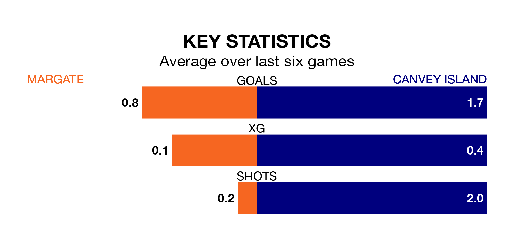

Margate welcome Canvey Island to Hartsdown Park on Saturday looking to pick up points to end their five-game losing streak.
Margate's struggles have left them with just one point from their last six Isthmian Premier Division matches, while their opponents have earned nine from a possible 18.
In the last 10 years, Margate and Canvey Island have played each other on six occasions. Margate won two of them, Canvey Island three, and they drew once.
On average, Margate scored 1.8 goals and the Gulls 2.5 in those matches.
Their last meeting was on September 23, when Canvey Island won 4-1 at home.
Margate are 19th in the table after 29 games, of which they have won five and drawn seven, earning 22 points.
Canvey Island are six places ahead of the home team in 13th, with 12 wins and two draws putting them on 38 points.
With 30 goals in 29 games so far this season, Margate are the league's third-lowest scorers with 1.0 goals per game. And they are conceding more than average, letting in 55 goals at a rate of 1.9 per game.
The Gulls, meanwhile, are average scorers, with 1.6 goals per game. They have conceded 2.0 goals per game.
Margate's last match was on February 10, a 2-1 loss against Chatham Town.
Canvey Island beat Billericay Town 3-0 last time out, also on February 10.
Updated: 12:06 (UTC), 15/02/24